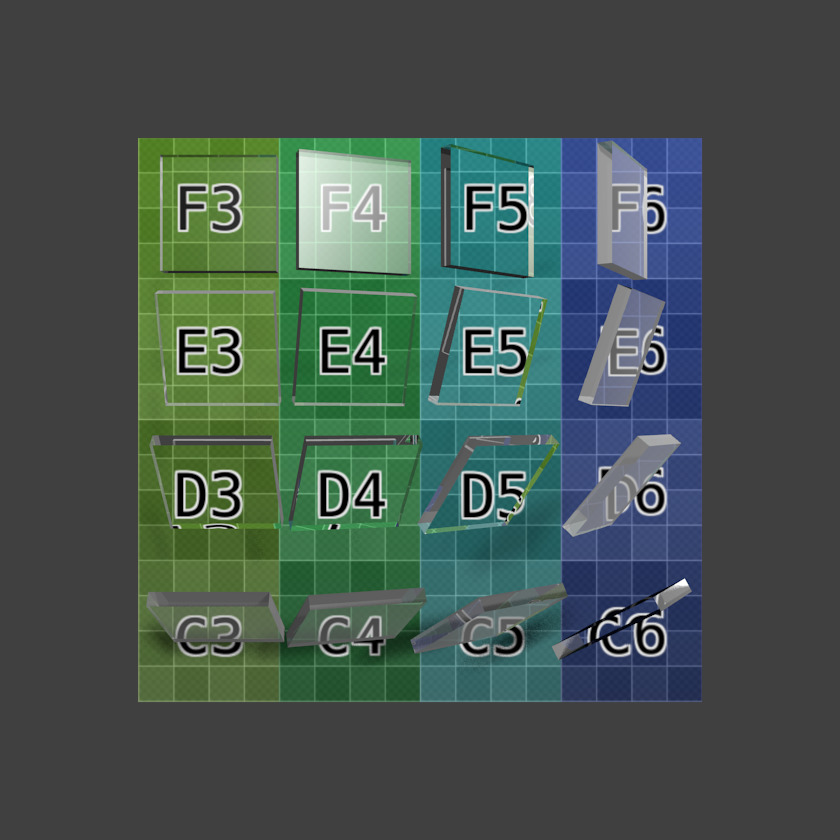

透明¶
参考
Blender可以设置材质为透明，光线可以穿透所有使用该材质的物体。透明是通过 alpha 通道控制的，除RGB颜色值之外，为每个像素增加一个介于0-1之间的值。如果alpha=0，该像素点完全透明，RGB值不影响该像素的显示结果；当alpha=1，该表面完全不透明，RGB颜色值决定最终显示结果。
透明面板。
Blender提供了3种设置材质透明的方式：遮罩、Z透明 和光线追踪。 下文将分别详述。球形物体的 材质预览 可以很好的展示这三个选项的功能。
通用选项¶
以下参数适用于所有透明选项：
- Alpha
- 通过设置所有像素点的alpha通道为给定值，定义材质的透明度。
- 菲涅尔
- 设置菲涅尔透视的强度。菲涅尔透视根据表面法向和观察方向的夹角，控制材质的透明效果。通常，夹角越大，材质变得更加不透明(这通常表现在物体的轮廓位置)。
- 高光
- 控制高光颜色的透明度/衰减。
- 混合
- 控制透明区域和非透明区域的混合。仅用于菲涅尔数值大于0时。
遮罩¶
该选项仅仅是掩盖了背景。根据像素点的alpha通道，使用alpha值混合活动物体的像素颜色和对应的背景像素颜色。对于alpha = 1的情况，只能看到物体的颜色 -- 整个物体完全不透明；但如果alpha = 0，则只能看到背景 -- 物体是透明的(不过注意活动物体背后的其他物体会消失)。
This is useful for making textures of solid or semi-transparent objects from photographic reference material, i.e. a mask is made with alpha opaque for pixels within the object, and transparent for pixels outside the object.
See also
遮罩透明.
Z透明¶
该选项对透明表面使用alpha缓冲。每个像素上的alpha值决定了材质基础颜色与其背后的物体/背景像素颜色的混合。该选项仅使有基础设置，不计算折射。
光线追踪透明¶
Uses ray tracing to calculate refractions. Ray tracing allows for complex refractions, falloff, and blurring, and is used for simulating the refraction of light rays through a transparent material, like a lens.
Note
The Raytrace option is only available in the Blender Render and Cycles render engines, but not in the Game Engine.
A ray is sent from the camera and travels through the scene until it encounters an object. If the first object hit by the ray is non-transparent, then the ray takes the color of the object.
If the object is transparent, then the ray continues its path through it to the next object, and so on, until a non-transparent object is finally encountered which gives the whole chain of rays its color. Eventually, the first transparent object inherits the colors of its background, proportional to its Alpha value (and the Alpha value of each transparent Material hit in between).
But while the ray travels through the transparent object, it can be deflected from its course according to the Index of Refraction (IOR) of the material. When you actually look through a plain sphere of glass, you will notice that the background is upside-down and distorted: this is all because of the Index of Refraction of glass.
Note
Enable Raytracing
To get ray-traced transparency, you need to:
- Enable ray tracing in your Render settings. This is done in the panel. Ray tracing is enabled by default.
- Set your Alpha value to something other than 1.0.
- In order for the background material to receive light passing through your transparent object, Receive Transparent must be turned on for that material in the panel.
选项¶
The Transparency Panel.
In addition to the common options given above, the following property controls are available:
- IOR
- Index of Refraction. Sets how much a ray traveling through the material will be refracted, hence producing a distorted image of its background. See IOR values for Common Materials below.
- Filter
- Amount of filtering for transparent ray trace. The higher this value, the more the base color of the material will show. The material will still be transparent but it will start to take on the color of the material. Disabled (0.0) by default.
- Falloff
- How fast light is absorbed as it passes through the material. Gives 'depth' and 'thickness' to glass.
- Limit
- Materials thicker than this are not transparent. This is used to control the threshold after which the filter color starts to come into play.
- Depth
- Sets the maximum number of transparent surfaces a single ray can travel through. There is no typical value. Transparent objects outside the Depth range will be rendered pitch black if viewed through the transparent object that the Depth is set for. In other words, if you notice black areas on the surface of a transparent object, the solution is probably to increase its Depth value (this is a common issue with ray tracing transparent objects). You may also need to turn on transparent shadows on the background object.
- Gloss
Settings for the glossiness of the material.
- Amount
- The clarity of the refraction. Set this to something lower than zero to get a blurry refraction.
- Threshold
- Threshold for adaptive sampling. If a sample contributes less than this amount (as a percentage), sampling is stopped.
- Samples
- Number of cone samples averaged for blurry refraction.
Examples¶
Index of Refraction¶
Influence of the IOR of an Object on the distortion of the background: spheres of Water, Glass and Diamond (top to bottom).
(Influence of the IOR of an Object on the distortion of the background: spheres of Water, Glass and Diamond (top to bottom)). There are different values for typical materials: Air: 1.000 (no refraction), Alcohol: 1.329, Glass: 1.517, Plastic: 1.460, Water: 1.333 and Diamond: 2.417.
菲涅尔¶

With ray-traced transparency. |

With alpha buffered transparency. |
{kind=link}
{kind=link}
{kind=link}
Note
The specular highlight in the F4 glass tile (which is facing midway between the light and the camera); the Fresnel effect can be seen in row C and column 6 where the faces are turned away from the camera.
The amount of Fresnel effect can be controlled by either increasing the Blend value or decreasing the Alpha value.
Depth¶

A simple scene with three glasses on a surface, and three lamps. Depth was set to 4, 8, 12, and 14, resulting in render times of 24 sec, 34 sec, 6 min, and 11 min respectively. (Download blend-file.)
Increasing Depth also considerably increases render time. Each time a light ray passes through a surface, the ray-tracing algorithm is called recursively. In the example above, each side of each glass has an exterior and an interior surface. Light rays thus have to pass through four surfaces for each glass.
But not only that, at every point on a surface, some of the light can be reflected, or mirrored off the surface in various directions. This results in multiple rays needing to be calculated for each point (often referred to as a tree of rays). In each of the rendered images above there are 640×400=256 000 pixels. By increasing Depth, at least one tree of rays is added to each pixel.
Be kind to your computer. Carefully placing objects in a scene to avoid overlapping transparent objects is often an interesting alternative.
Hints¶
Transparent Shadows¶

No transparent shadows. |

No transparent shadows, environment lighting enabled. |

Transparent shadows enabled, alpha set to 0.0. |
|

Transparent shadows with ambient occlusion set to multiply, distance 1 (radius of sphere). |

As previous, distance increased to 2 (diameter of sphere). |
{kind=link}
By default, the shadows of transparent objects are rendered solid black, as if the object was not transparent at all. But in reality, the more transparent an object is, the lighter its shadow will be.
In Blender, transparent shadows are set on the materials that receive the shadows from the transparent object. This is enabled and disabled with the Receive Transparent button, in the panel. The shadow's brightness is dependent on the Alpha value of the shadow casting material.
Alternatives to transparent ray-traced shadows can be found in the World tab, namely the Ambient Occlusion, Environment Lighting, and Gather panels. Alternatively, a texture can be used to control the Intensity value of the shadow-receiving material.
IOR Values for Common Materials¶
The following list provides some index of refraction values to use when ray-traced transparency is used for various liquids, solids (gems), and gases:
气体¶
|
|
|
常见液体¶
|
|
|
常见透明材质¶
|
|
|
常见不透明材质¶
|
|
|
宝石¶
|
|
|
金属¶
|
|
|